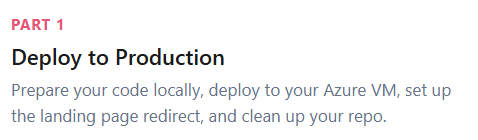
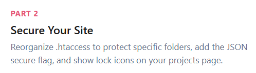
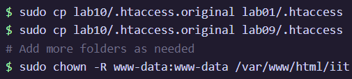

Deploy project site to production
Make sure that the VM FDQN links specifically to the labsite and cleanup files that may conflict.

Secure site with .htaccess & .htpasswd
Configure .htaccess to restrict access and require authentication for certain files.

Lab Page Updated
This is the terminal input showing the .htaccess application to certain files to secure them.